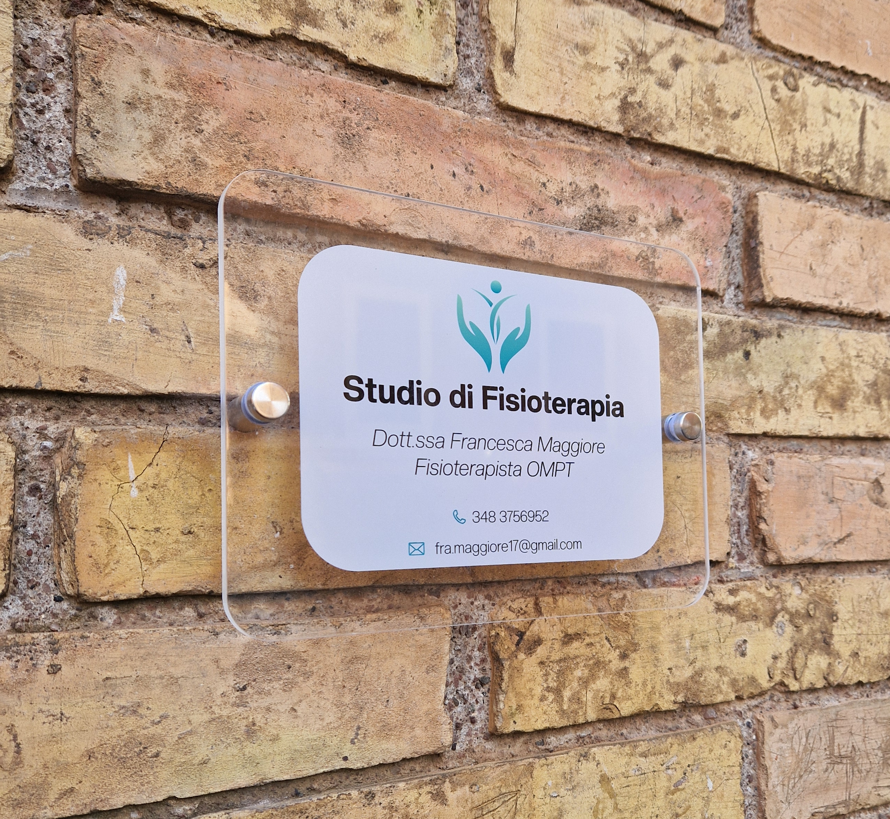
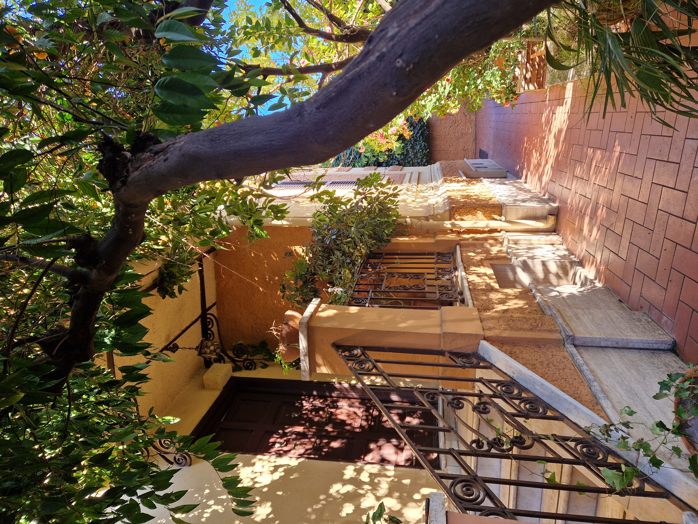
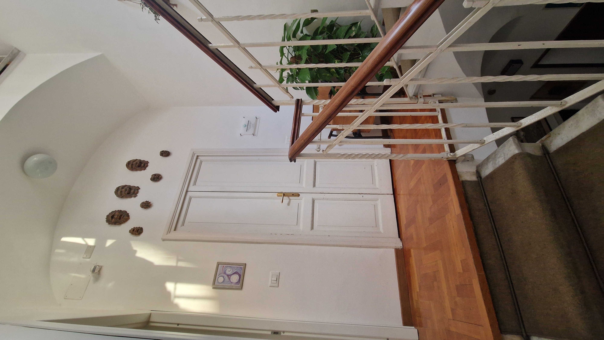
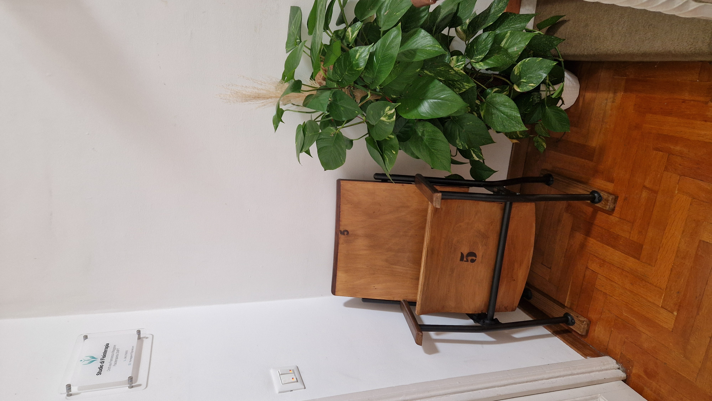
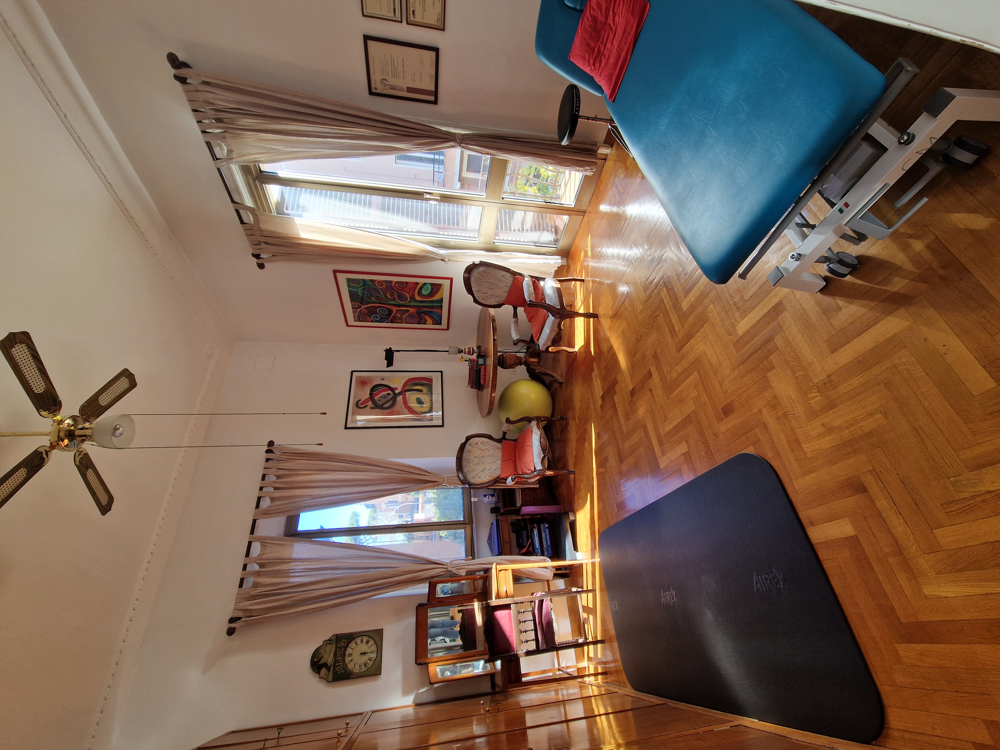
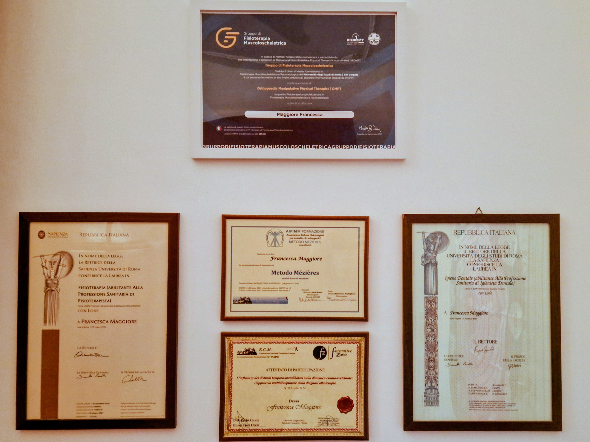
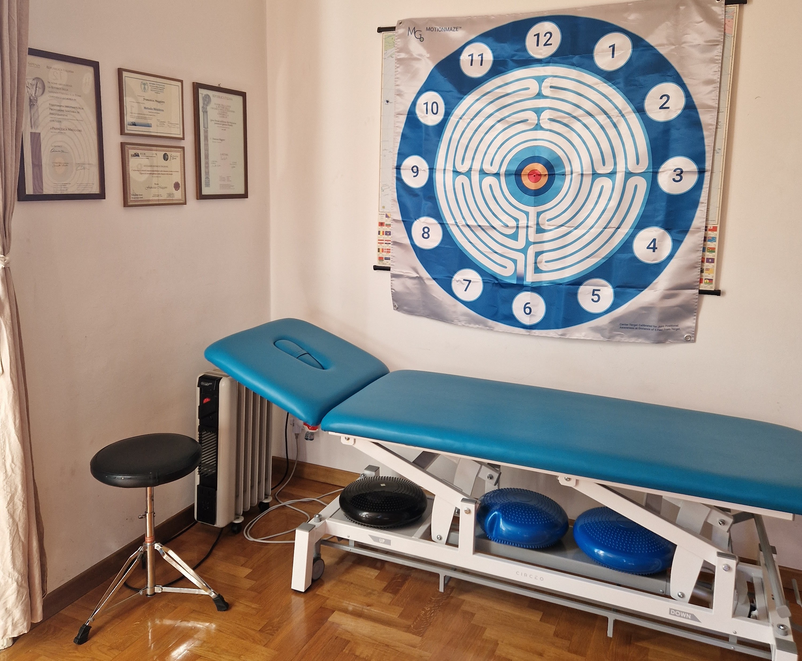

Chi Sono
Sono una fisioterapista laureata presso l'Università La Sapienza di Roma nel 2020 e con passione mi occupo di cura e benessere della persona. Nel 2021 ho svolto il corso di rieducazione posturale Mézières e nel 2022 il corso Rocabado di rieducazione Temporo-Mandibolare. Nel 2026 ho conseguito il master in Fisioterapia Muscoloscheletrica e Reumatologica presso l'Università di Tor Vergata di Roma e acquisito il titolo di OMPT (Orthopaedic Manipulative Physical Therapists).
Vedo la riabilitazione come un percorso personalizzato di apprendimento motorio e comportamentale con obiettivi specifici per ogni individuo. Da anni aiuto i miei pazienti a ritrovare la libertà nel movimento attraverso programmi personalizzati mirati a una gestione del corpo consapevole e informata. Credo in un approccio multidisciplinare, pertanto svolgo collaborazioni con altre figure mediche e sanitarie per offrire al paziente una cura globale sul piano biologico, psicologico e sociale.Lo Studio
Uno spazio accogliente e professionale per il tuo percorso di cura. Lo studio è situato nel quartiere di Monteverde all'interno di un elegante villino degli anni '30. Per raggiungere lo studio si entra dal cancello sulla strada, successivamente si accede all'interno del villino e si sale tramite le scale al primo piano.







I Miei Servizi
Riabilitazione ortopedica per il recupero di mobilità articolare, forza muscolare e gesti funzionali e sportivi dopo un infortunio, un intervento chirurgico o un sovraccarico funzionale. I percorsi riabilitativi si compongono di un'integrazione personalizzata di Educazione, Esercizio Terapeutico e Terapia Manuale in base alle necessità del singolo paziente.
Riabilitazione Post-Traumatica
Recupero della funzionalità in seguito a traumi come distorsioni, fratture, lesioni legamentose, muscolari o tendinee. Educazione alla gestione della quotidianità nella fase acuta fino al reintegro graduale di tutte le attività svolte precedentemente al trauma.
Riabilitazione Post-Chirurgica
recupero della funzionalità in seguito a interventi chirurgici dal post operatorio al reintegro graduale delle attività di vita quotidiana, di partecipazione sociale e infine dell'attività sportiva.
Terapia Manuale
Uso di tecniche manuali specifiche articolari e muscolari personalizzate per la riduzione del dolore e l'aumento della mobilità da associare all'esercizio terapeutico nelle varie fasi del percorso riabilitativo.
Esercizio Terapeutico
Percorsi personalizzati di esercizio con esposizione graduale a gesti funzionali e sportivi cuciti sulle richieste del paziente. L'esercizio è uno strumento molto efficace per l'aumento dell'autonomia, la riduzione del dolore e l'aumento della mobilità e della performance.
Rieducazione Posturale
Percorso di apprendimento motorio, consapevolezza corporea e propriocezione tramite elementi del metodo Mézières sulla percezione e l'allungamento delle catene muscolari. Analisi delle posture mantenute nella vita quotidiana (lavorativa e non) e apprendimento di strategie posturali alternative e della relativa gestione.
Cefalea
Valutazione e inquadramento del tipo di cefalea e informazioni sulle possibili strategie di approccio. Percorsi per la gestione e trattamento della cefalea nella vita quotidiana e dei fattori ad essa associati. Se necessario collaborazione diretta con neurologo per le forme primarie più complesse (es. emicrania, cefalea tensiva).
Fisioterapia Sportiva
Trattamento e prevenzione degli infortuni per atleti amatoriali e professionisti, per un ritorno sicuro allo sport. Percorsi personalizzati sulla prevenzione e/o gestione del sovraccarico nell'attività sportiva.
Riabilitazione Temporo-Mandibolare
Percorsi di rieducazione articolare e muscolare per le disfunzioni temporo-mandibolari e supporto alla gestione del bruxismo diurno e notturno. Se necessario collaborazione diretta con dentista o gnatologo per un approccio multidisciplinare.
Linfodrenaggio
Linfodrenaggio manuale per forme di insufficienza venosa e/o patologie vascolari in collaborazione con angiologo.
Fisioterapia a Domicilio
Previa disponibilità svolgo percorsi riabilitativi a domicilio per persone anziane o con specifiche necessità. Tale servizio è rivolto soprattutto ai soggetti con mobilità ridotta, temporanea o permanente, che sono impossibilitati a raggiungere lo studio attraverso le scale.